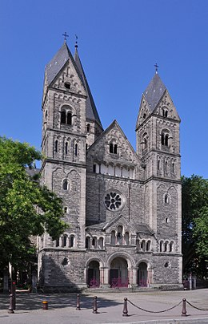

- 상테티엔 대성당
- 텅쁠르 너프
- 오페라

Le Temple neuf, ou Nouveau Temple protestant, est un édifice de culte réformé construit à Metz, entre 1901 et 1905, durant la période wilhelminienne.
La paroisse est aujourd'hui membre de l'Union des Églises protestantes d'Alsace et de Lorraine.
새로운 사원 혹은 새로운 프로테스턴트 사원은 메스에 건축된 종교개혁건물로, 1901년부터 1905년 빌하이미니엔느 통치 기간에 지어졌다.
본당은 오늘날 프로테스턴트 알자스 로렌 연합의 회원이다.